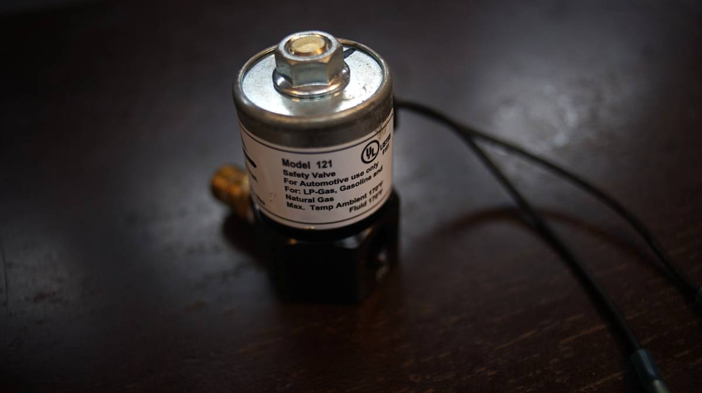
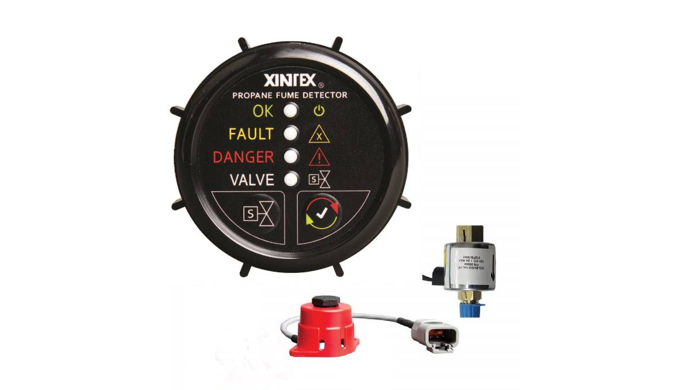
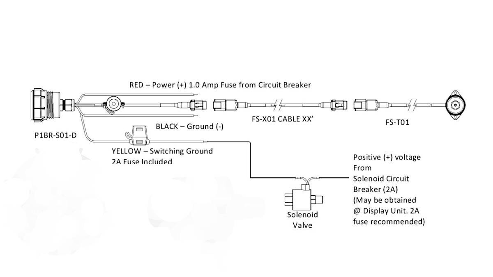
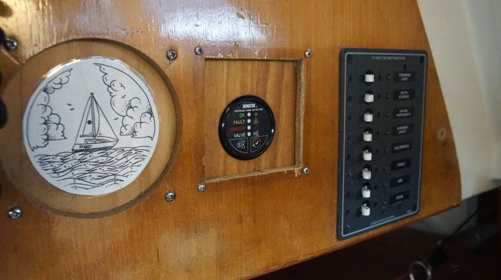

lpg fume detection system
Cortes Island, (BC, Canada)
2023.07.27
The GS/5 propane leak detector failed today, we couldn't use it to switch the solenoid on (switches no longer responsive). It showed other signs of failure before this, at times switching on the solenoid by way of the panel would make it turn on and off really fast, which could only be resolved by turning it off, and on again.
We decided to keep the solenoid in line and to bypass the propane detector panel entirely, wiring the solenoid to the breaker switch. That way, the solenoid could be turned on and off from inside using that switch. The result was that the solenoid would get very hot, and stay hot, affecting its neighboring components—this wasn't ideal.
We decided to remove the inline solenoid for now, until we can replace the propane detector panel in the fall. We also plan to get another solenoid as a backup, in case all of the recent happenings have messed up our current one(it's new from last year). For now, the tank goes through the pressure gauge, the two-stage regulator, and then to the stove. We open the tank valve to use the stove, and close it as soon as we are finished(for safety). This is far from ideal, but given that we aren't close to any city at the moment, it'll have to do. In any case, we've cut down a lot on our LPG cooking this summer because of solar cooking.
We ought to have replaced the panel when we made the initial lpg refit, that was a mistake.
2024.02.15
Victoria, BC
how lpg solenoids work
A solenoid is an electrically-controlled valve, it converts electrical energy into mechanical energy and permits for remote, and autonomous operation of a valve. The mechanism varies from linear action, plunger-type actuators to pivoted-armature actuators and rocker actuators. Since LPG systems use plunger-type actuators to control the flow of gas, we'll focus on that.
In a sailboat LPG system with a solenoid valve, the LPG tank valve is left open, removing the need to physically go outside to turn the valve on and off. It's the job of the solenoid valve to protect the system and to regulate the flow of gas. The controller for the solenoid valve is placed inside the cabin and is operated remotely from there. Some controllers are equipped with automatic shut-offs, triggered by a sniffer when detecting leaks in a system which will send a signal back to the controller to switch the solenoid valve off.
LPG solenoids have two-port valves, with gas coming in one way and out from another, with a plunger obstructing the flow of gas when the solenoid isn't energized(no power).
There are two types of valves:
Normally Open - N.O.
Normally Closed - N.C.
In LPG systems N.C valves are required, so that if the power source goes out the valve closes, isolating the tank from the appliance.
How N.C. Plunger-Type Actuators Work
The flow of gas is obstructed by a metal plunger, with a spring forcing it into a closed position. The plunger and spring are contained within a large copper coil.
When current is applied to a straight wire, the magnetic field moves in a circular pattern around the wire, but when the wire is shaped into a coil the magnetic field intensifies and is concentrated in the center. This magnetic field causes the metal plunger, attracted by the pull of the magnetic field, to slide upward against the spring, opening the valve and allowing the gas to pass.
When the current is turned off, the magnetic field collapses and the spring forces the plunger back into its original resting position.
Installation
The solenoid we have uses 1 A of current, it will get warm when first turned on but should cool down after a while. A solenoid in an LPG system is designed to be turned on when you want to cook, and then turned off again immediately when you are done.
If the solenoid is kept on it will continue to draw power. If the goal is to keep a solenoid on more often(depending on usage), consider installing a 12V-5V buck converter(Forum), or dissipating the energy as heat(YouTube) with series resistor.
We were hoping to replace our panel with one from the same make, but Electro Systems, a local Victoria company, doesn't exist anymore. It appears that a lot of Canadian manufacturers of marine goods are closing, or are swallowed up by larger fish. It's a shame, their products were good.
Control panels for LPG devices are not cheap, in the end we chose a:
Xintex Propane Fume Detector with Alarm & Solenoid(P-1BS-R).
Not all panels come with solenoids, or sniffers. It may be safer to install a sniffer as a separate system (in case of panel failure), but having the sniffer wired to the controller is nice because the closure of the tank is automated when a leak is detected. A separate sniffer will only detect the presence of a leak, but will not be able to stop it (you'll have to physically close the solenoid).
This model was on sale online for CAD$390(most models on the market cost more than this). It comes with a single sensor(sniffer, some models offer two sensors), and a high-pressure rated solenoid. Some solenoids are not rated for high-pressure and should go on the low-pressure side of the system, after the two-stage regulator (the pressure rating is written on the solenoid body).
We had already purchased a solenoid, so now we have two. Before it died, our former control panel caused the solenoid to rapidly switch on and off non-stop. It took a long time before we noticed it was happening (the click-clicking was faint from inside the cabin). We had concerns about whether or not this event caused damage to the unit(solenoids are rated for 100,000 cycles, it's probably fine but we didn't want to risk it), and so figured that getting a backup solenoid was a good idea. We don't have luck when failing to replace certain parts of a problematic system, the part we keep always ends up causing us trouble.
Fume Sensor
LPG is heavier than air and will fall or settle if released.
We installed the sensor(sniffer) near the burner, on the floor in a spot protected from physical damage. We installed ours on the side wall, near the floor. Our other sniffer was placed in the bilge, very far from the stove. We are not sure why the former owners thought that this was a smart place to put it, maybe because it's near the lowest point on board, where the gas might gather if there's a leak. Our thinking is that if the gas is allowed to reach that point, we're already in trouble
Routing wires on a boat is never fun. The wire for the sniffer goes under the sink, under the galley floor, through the engine room, then up through another space to get to the control panel. It's important to note that the sensor draws power when the panel is left on. The detector will ring an alarm when fumes reach 18-20% LEL.
Lower Explosive Limit(LEL) is defined as the lowest concentration, by %, of a gas or vapor in the air that is capable of producing a flash of fire in the presence of an ignition source.
Control Panel
We installed the control panel, filling a void left by the older panel, in a bulkhead. A lot of the wood on Pino is full of holes, and covered with a variety of wooden backings. Replacing the entire wooden panel and starting from scratch is tempting, it is sometimes necessary because the size of the holes render it unusable (we did it for our breaker panel doors), but other times the wood is still good and we learn to live with the imperfections left by former instruments. It's like darning, but with wood.
"Hey, why is your control panel not centered?"
Well, we're glad you asked, because it certainly isn't because we don't care(we apologize to those with symmetry and ordering OCD).
We dry-fitted the wooden backing on the bulkhead, drew the circle on the wood, cut the hole using an appropriately-sized holesaw, fitted the control panel... but then realized that the large wire braid coming out of the back of the panel made it so that the whole bulkhead couldn't close. For it to close, we had to move the backing a bit off-center, or make a new wooden backing. We stuck with the off-center backing, because we dislike waste more than we dislike asymmetry.
We tested the solenoid and the control panel, all worked well! We are now able to control the solenoid from inside the boat again, yay!